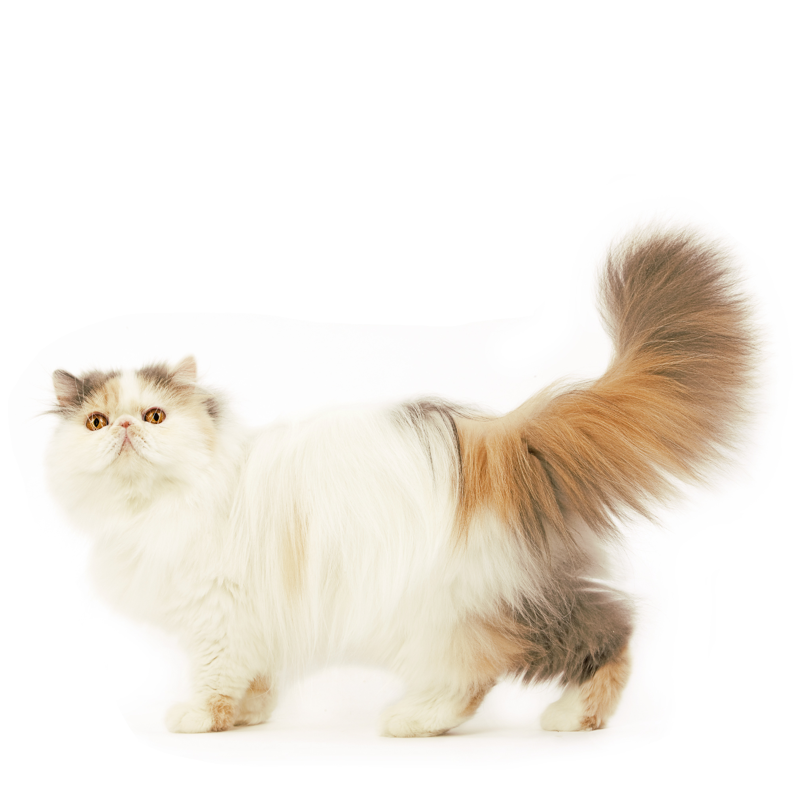

Персидская
Характеристика
| Образ жизни | В помещении |
| Тип шерсти | Длинношерстная |
| Размер | Средний-Крупный |
| Образ жизни | В помещении |
| Тип шерсти | Длинношерстная |
| Размер | Средний-Крупный |
Типичный представитель персидской породы – кот или кошка размером от среднего до крупного с сильным, коренастым телом и короткими, толстыми конечностями. У персов массивная круглая голова, маленькие уши и очень большие глаза круглой формы, придающие морде приятное и дружелюбное выражение. В периоды между линьками шерсть животного очень густая, струящаяся, особенно длинная в области шеи. Короткий хвост тоже покрыт длинной шерстью.
У персидской кошки мягкий, кроткий характер, что делает ее одной из самых популярных пород. Она спокойная, тихая и уживчивая, формирует устойчивые привычки, предпочитает мирную атмосферу в доме и нуждается в бережном уходе. Любит, когда дети расчесывают ее и гладят, но едва ли согласится играть с ними в шумные игры. Она с радостью согласится поиграть с игрушкой-«дразнилкой», но большую часть времени будет отдыхать одна на своей любимой лежанке. У персидской кошки негромкий музыкальный голос, но главное ее средство коммуникации с хозяином – большие выразительные глаза.
История происхождения персидских кошек достоверно неизвестна. Большинство специалистов полагают, что длинношерстность возникла вследствие спонтанной мутации или в результате спаривания диких европейских кошек с манулами с побережья Каспийского моря или из Центральной Азии. Характеристики и особенности современных персов – результат длительной и упорной селекционной работы заводчиков.